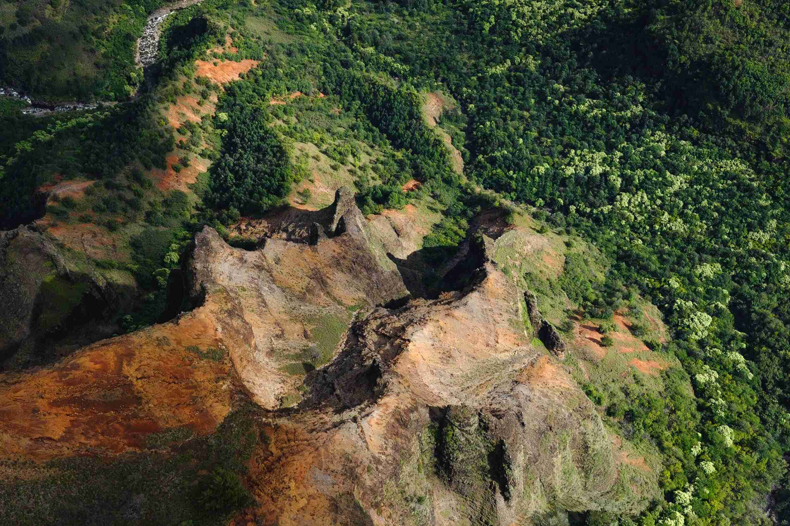
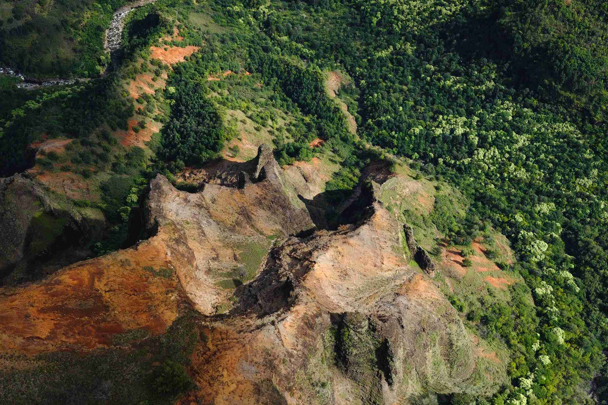

SELAMAT DATANG DI HUTAN LESTARI
Kami ada untuk kelestarian
Hutan di Indonesia
indonesia kehilangan sekitar 500 ribu hektar hutan setiap tahunnya, entah sebab bencana alam maupun karena ulah dari manusia itu sendiri. Penebangan hutan menjadi masalah serius di indonesia, semakin banyak hutan yang ditebang semakin banyak pula masalah yang akan datang. Oleh karena itu kami hadir dengan visi dan misi kami.
Mewujudkan masyarakat yang peduli dan bertanggung jawab terhadap perlindungan dan pemulihan hutan di Indonesia.
- Menyediakan Informasi tentang kerusakan hutan di indonesia
- Meningkatkan kesadaran masyarakat mengenai pentingnya pelestarian hutan sebagai sumber kehidupan yang berkelanjutan.
- Mendukung upaya pemulihan hutan di Indonesia melalui kampanye penghijauan dan penanaman pohon.
Tentang Kerusakan Hutan
Hutan adalah rumah, jika rumah kita rusak maka tidak ada lagi tempat berlindung dan marabahaya pun akan datang
 


KERUSAKAN HUTAN
Pengertian dan definisi dari kerusakan hutan adalah berkurangnya luasan area hutan karena kerusakan ekosistem hutan yang sering disebut degradasi hutan ditambah juga penggundulan dan alih fungsi lahan hutan atau istilahnya deforestasi.
JAGA HUTAN KITA
Bila hutan masih terjaga dengan baik memiliki pohon-pohon yang rimbun, hutan dapat menyerap air ketika hujan datang dan menyimpannya dalam tanah dan melepaskannya melalui aliran sungai.